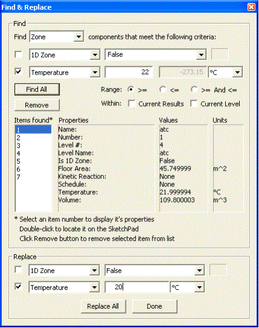

ContamW provides the ability to perform both simple searches for building components and to perform find-and-replace operations. Both features involve the use of a dialog box that can be displayed simultaneously with the SketchPad to allow interaction between both the SketchPad and the dialog boxes.
Find
Use the Find feature to locate various building component icons on the SketchPad by either their Number or Name properties. Be aware that numbers may change whenever the total number of each type of component is modified by either adding or deleting components. Whenever the project file is saved, the components will be renumbered based on their SketchPad position starting from the top level and working from left to right then top to bottom on the SketchPad down through the building levels.
Menu Command: Edit → Find…
Keyboard Shortcut: Ctrl+F
Figure – Find dialog box
Simply select the type of component icon you wish to locate, select either a number or name from the lists provided and click the Find button. The icon will be located and highlighted on the SketchPad. If there are no components of a given type, the search controls will be disabled.
Searchable items:
Air Handling Systems
Airflow Paths - including Supplies and Returns of Simple Air Handling Systems
Control Nodes - sub-nodes of super nodes will defer to the super node
Duct Junctions
Duct Segments
Occupants
Source/Sinks
Zones - including implicit supply and return zones of simple air handling systems
Find and Replace
The Find and Replace feature consists of a more advanced find feature that enables you to generate lists of items based on user-selected ranges of property values. You can then replace parameters of the items in the list of items found.
Menu Command: Edit → Replace…
Keyboard Shortcut: Ctrl+R

Figure – Find and Replace dialog box
There are two sections of the Find and Replace dialog box: Find and Replace. Use the dialog box controls within the Find section to generate a list of items that match the desired search criteria. Once you have generated a list of items found, then select the items within the Replace section to replace the desired parameters of the items within the list. You are not required to use the replace feature; you can simply use this tool to locate specific items within a project file.
Each type of building component has two predefined sets of parameters upon which searches can be performed: list-based and value-based. The list-based search parameters are accompanied by a list of each parameter type contained in the project, e.g., elements, schedules, filters, etc. You can either select from the list to search for an exact match or type in a case-sensitive search string of text to match all items that contain the search string. Value-based parameters allow you to search for items based on a range of values of the selected parameter. It is possible to search using either of these sets of parameters or both. Use the check boxes that are located adjacent to the search parameters to select which ones to use.
Once you have set your search criteria, click the Find All button to initiate the search. This will generate a list of Items found. You can then select items in the list to display a summary of their properties, or double-click to locate the item on the SketchPad. You can also remove individual items from the list by selecting the item and clicking the Remove button. This allows you to refine the set of items for replacement.
|
Building Component |
List Parameters |
Value Parameters |
|
Air Handling System |
Kinetic reaction in return Kinetic reaction in supply Outdoor air filter Return air filter Outdoor air schedule |
Minimum outdoor airflow Return system volume Supply system volume |
|
Air Handling System Supply and Return |
Air handling system Filter Schedule |
Airflow rate |
|
Airflow Path |
Airflow element Filter Schedule Wind pressure option and Profile |
Azimuth angle Constant wind pressure value Multiplier Relative elevation Wind speed modifier |
|
Control Node * |
Control type |
N/A |
|
Duct Junction |
Color |
Relative elevation Temperature |
|
Duct Segment |
Color Filter Schedule |
Length Loss coefficient |
|
Duct Terminal |
Balanced Filter Schedule Wind pressure option and Profile |
Azimuth angle Constant wind pressure value Wind speed modifier |
|
Occupant |
Inhalation schedule |
Body weight Multiplier Peak inhalation rate |
|
Source/Sink |
Source/sink element Schedule Species |
Multiplier |
|
Zone |
1D zone |
Floor area Temperature Volume |
* Control nodes are not replaceable using this feature
Table – Find and Replace options